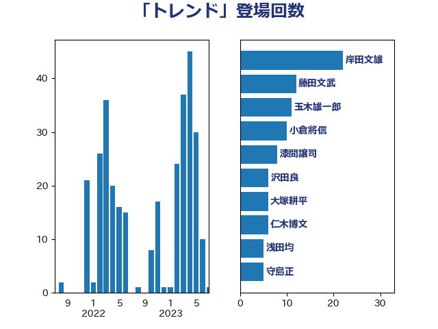

単語「トレンド」

| 岸田文雄 | 自由民主党 | 22 回 |
| 藤田文武 | 日本維新の会 | 12 回 |
| 玉木雄一郎 | 国民民主党 | 11 回 |
| 小倉將信 | 自由民主党 | 10 回 |
| 漆間譲司 | 日本維新の会 | 8 回 |
| 沢田良 | 日本維新の会 | 6 回 |
| 大塚耕平 | 国民民主党 | 6 回 |
| 仁木博文 | 無所属 | 6 回 |
| 浅田均 | 日本維新の会 | 5 回 |
| 守島正 | 日本維新の会 | 5 回 |
| 加藤勝信 | 自由民主党 | 5 回 |
| 長友慎治 | 国民民主党 | 4 回 |
| 萩生田光一 | 自由民主党 | 4 回 |
| 礒崎哲史 | 国民民主党 | 4 回 |
| 平木大作 | 公明党 | 4 回 |
| 川合孝典 | 国民民主党 | 4 回 |
| 小林鷹之 | 自由民主党 | 4 回 |
| 鎌田さゆり | 立憲民主党 | 3 回 |
| 鈴木俊一 | 自由民主党 | 3 回 |
| 茂木敏充 | 自由民主党 | 3 回 |
| 福田昭夫 | 立憲民主党 | 3 回 |
| 石井苗子 | 日本維新の会 | 3 回 |
| 田嶋要 | 立憲民主党 | 3 回 |
| 熊谷裕人 | 立憲民主党 | 3 回 |
| 湯原俊二 | 立憲民主党 | 3 回 |
| 岡田直樹 | 自由民主党 | 3 回 |
| 小野泰輔 | 日本維新の会 | 3 回 |
| 宗清皇一 | 自由民主党 | 3 回 |
| 住吉寛紀 | 日本維新の会 | 3 回 |
| 鬼木誠 | 立憲民主党 | 2 回 |
| 音喜多駿 | 日本維新の会 | 2 回 |
| 阿部知子 | 立憲民主党 | 2 回 |
| 赤木正幸 | 日本維新の会 | 2 回 |
| 谷合正明 | 公明党 | 2 回 |
| 田中健 | 国民民主党 | 2 回 |
| 片山大介 | 日本維新の会 | 2 回 |
| 杉尾秀哉 | 立憲民主党 | 2 回 |
| 斉藤鉄夫 | 公明党 | 2 回 |
| 打越さく良 | 立憲民主党 | 2 回 |
| 庄子賢一 | 公明党 | 2 回 |
| 山岡達丸 | 立憲民主党 | 2 回 |
| 太田房江 | 自由民主党 | 2 回 |
| 大西健介 | 立憲民主党 | 2 回 |
| 吉田はるみ | 立憲民主党 | 2 回 |
| 保岡宏武 | 自由民主党 | 2 回 |
| 仁比聡平 | 日本共産党 | 2 回 |
| 中川宏昌 | 公明党 | 2 回 |
| 上月良祐 | 自由民主党 | 2 回 |
| 高橋千鶴子 | 日本共産党 | 1 回 |
| 須藤元気 | 無所属 | 1 回 |
| 青島健太 | 日本維新の会 | 1 回 |
| 阿部司 | 日本維新の会 | 1 回 |
| 長妻昭 | 立憲民主党 | 1 回 |
| 金村龍那 | 日本維新の会 | 1 回 |
| 里見隆治 | 公明党 | 1 回 |
| 足立敏之 | 自由民主党 | 1 回 |
| 西村康稔 | 自由民主党 | 1 回 |
| 菊田真紀子 | 立憲民主党 | 1 回 |
| 若宮健嗣 | 自由民主党 | 1 回 |
| 自見はなこ | 自由民主党 | 1 回 |
| 笠井亮 | 日本共産党 | 1 回 |
| 穂坂泰 | 自由民主党 | 1 回 |
| 稲富修二 | 立憲民主党 | 1 回 |
| 石橋通宏 | 立憲民主党 | 1 回 |
| 猪瀬直樹 | 日本維新の会 | 1 回 |
| 牧島かれん | 自由民主党 | 1 回 |
| 牧山ひろえ | 立憲民主党 | 1 回 |
| 渡辺創 | 立憲民主党 | 1 回 |
| 浅野哲 | 国民民主党 | 1 回 |
| 泉田裕彦 | 自由民主党 | 1 回 |
| 江田憲司 | 立憲民主党 | 1 回 |
| 櫻井周 | 立憲民主党 | 1 回 |
| 櫛渕万里 | れいわ新選組 | 1 回 |
| 森本真治 | 立憲民主党 | 1 回 |
| 梅村聡 | 日本維新の会 | 1 回 |
| 柴愼一 | 立憲民主党 | 1 回 |
| 松野博一 | 自由民主党 | 1 回 |
| 村田享子 | 立憲民主党 | 1 回 |
| 杉本和巳 | 日本維新の会 | 1 回 |
| 木原誠二 | 自由民主党 | 1 回 |
| 朝日健太郎 | 自由民主党 | 1 回 |
| 日下正喜 | 公明党 | 1 回 |
| 市村浩一郎 | 日本維新の会 | 1 回 |
| 川田龍平 | 立憲民主党 | 1 回 |
| 島村大 | 自由民主党 | 1 回 |
| 山田太郎 | 自由民主党 | 1 回 |
| 山添拓 | 日本共産党 | 1 回 |
| 山本有二 | 自由民主党 | 1 回 |
| 小池晃 | 日本共産党 | 1 回 |
| 小林茂樹 | 自由民主党 | 1 回 |
| 安江伸夫 | 公明党 | 1 回 |
| 塩崎彰久 | 自由民主党 | 1 回 |
| 吉田豊史 | 無所属 | 1 回 |
| 吉田宣弘 | 公明党 | 1 回 |
| 吉田久美子 | 公明党 | 1 回 |
| 吉川元 | 立憲民主党 | 1 回 |
| 井上英孝 | 日本維新の会 | 1 回 |
| 中島克仁 | 立憲民主党 | 1 回 |
| 上田英俊 | 自由民主党 | 1 回 |
| ながえ孝子 | 無所属 | 1 回 |
| こやり隆史 | 自由民主党 | 1 回 |
| おおつき紅葉 | 立憲民主党 | 1 回 |